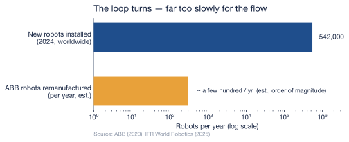

9 The Circular Economy Response
Chapter 8 ended on a deferral: a humanoid is, in principle, the easy case for recovery — high-value, individually identifiable, owned in fleets — and yet the measured trend runs the other way, with the recovery rate falling rather than rising. That gap between what should happen and what does is the subject of this chapter. The circular economy is not a hypothetical here. For one kind of robot it already exists, it works, and it has the warranties and the carbon figures to prove it. The question is whether that working loop is the answer to the humanoid problem — or a model that quietly breaks the moment a humanoid enters it.
9.1 A loop that already turns
Start with the good news, because it is real. Walk into ABB’s robotics business and you find a circular economy in full operation. A customer with an aging industrial arm does not have to scrap it; ABB will buy it back, strip it down at one of its Global Remanufacture and Workshop Repair Centers — in Czechia, Michigan, Shanghai, Brazil, Mexico, Germany, Vietnam — and rebuild it from the company’s original design plans and dimensional data. Every unit passes a detailed inspection and a minimum sixteen-hour functioning test before it can be labelled a certified remanufactured robot, and it ships with a warranty — at least twelve months, and two years in ABB’s program announcement — plus the same installation, training, and service support as a new machine (ABB, 2020, 2026). ABB’s own numbers for the process are striking: refurbishing a robot produces 75% less CO₂ than building a new one, and 60–80% of the robot can be reused, with the remainder sent to certified recycling partners (ABB, 2026). By 2020, ABB had put thousands of robots through this loop across twenty-five years of operation (ABB, 2020).
And the channel is not exotic. ABB’s buy-back leg takes in legacy and inactive robots that would otherwise be scrapped and feeds them back into a genuine secondary market in certified used arms (ABB, 2020). The same instinct operates at hyperscale on the compute side of the ledger: in 2024 Google collected roughly 8.8 million components from decommissioned hardware to reuse or resell through its reverse-supply-chain program, drew 44% of the components used to build and maintain its servers from reused inventory, and diverted 84% of its data-center operational waste from landfill (Google, 2025). The circular economy, in other words, is not waiting to be invented. Where the hardware is valuable, standardized, and owned by organizations that keep records, the loop closes.
9.2 Real — and a rounding error
The trouble is scale, and it is worth being precise about. The world installed about 542,000 new industrial robots in 2024 and now runs an operational stock of roughly 4.66 million machines (International Federation of Robotics, 2025). Against that flow, “thousands of robots over twenty-five years” — even read generously as a few hundred a year, and even multiplied across every OEM running a similar program — works out, on a back-of-the-envelope estimate, to a fraction of one percent of what is installed annually. The loop turns; it does not turn fast enough to absorb the stream feeding into it. This is not a hypothetical limit. It is exactly what Chapter 8 measured from the other end: if remanufacturing and recycling were keeping pace, the broad e-waste recovery rate those retired machines fall into would be climbing, not falling toward 20%.
9.3 Why the loop does not transfer to the humanoid
Scale is the smaller objection. The larger one is that the loop which closes so cleanly for an industrial arm is built on a property the humanoid does not share. An industrial robot’s value lives in its mechanics — the gearboxes, the motors, the rigid structure — and mechanics do not go out of date. A 2010 welding arm rebuilt to original specification welds exactly as well as it did when new, which is why a warranty on a remanufactured unit is an honest promise. The humanoid inverts this. Its value lives in its intelligence, and Chapter 7 established that the intelligence is lapped roughly every twelve months while the body is engineered to last a decade. By the time a humanoid’s body is worn enough to be worth remanufacturing, its brain — and very likely its entire software platform — is long obsolete. Remanufacturing would faithfully restore the part of the machine that still works and could do nothing for the part that decides whether anyone wants it.
| Dimension | Industrial robot arm | Humanoid robot |
|---|---|---|
| Where the value lives | In the mechanics — gearboxes, motors, structure | In the intelligence — the compute and the model |
| Obsolescence horizon | A decade or more; mechanics do not date | Brain lapped in ~12 months (Ch. 7); body outlives its usefulness |
| What remanufacturing restores | The valuable part — the mechanics | Only the durable part — the body — not the valuable part |
| Standardization | Stable, long-lived models; parts interchange | Bespoke, fast-iterating platforms; little cross-generation reuse |
| Critical-material recovery | NdFeB magnets in a handful of joints | A magnet in every actuator; actuators are >½ the BOM (Ch. 2) |
And then there is the material itself. ABB’s 60–80% reuse figure is a share of the robot by parts and mass — the heavy, generic, reusable structure. The neodymium-iron-boron magnet inside each actuator is precisely what falls into the other 20–40%, the portion “sent to certified recycling partners.” Chapter 8 already named what happens there: of all the rare-earth element demand in the world, recycling supplies about 1% (Baldé et al., 2024). The two figures describe different denominators and cannot be added, but their direction is the same and it is the crux of this book — the circular economy, working at its best on an industrial robot, recovers the common metals and still loses the contested ones. A humanoid carries a permanent magnet in every actuator, and actuators are more than half its bill of materials (Chapter 2) — so it walks more of that chokepoint material into the 1% recovery zone than any machine the loop was designed around.
9.4 What closing it would actually take
None of this makes a humanoid circular economy impossible. It makes clear what it would have to be, and how far that is from what exists. The single change that would matter most follows directly from the obsolescence clock: design the brain to be swapped, not buried. A modular compute module that can be upgraded while the durable body stays in service would let the part that lasts a decade actually last a decade, instead of being scrapped because the part that lasts a year is soldered to it. Around that, the familiar circular-economy machinery — design for disassembly so the magnets come out cleanly, and extended-producer-responsibility take-back rules so the fleets are routed to qualified battery and metallurgical recyclers rather than the informal stream — would do the rest of the work. These are not technologies awaiting discovery; the industrial-arm program proves the logistics are solvable. They are choices, and the measured trend says the market is not making them on its own: left to price signals, the recovery rate is falling, not rising.
That is the honest answer to the question Chapter 8 deferred. The loop can be closed, but not by assuming the humanoid will inherit the industrial robot’s circular economy — because the humanoid breaks the very feature that makes that economy pay. Closing it requires building something the industry has not yet built, against a clock that is currently winning. Which leaves a final accounting to be done: with every stage of the lifecycle now measured — the price, the capital, the reliability, the trade chokepoints, the adoption, the obsolescence, the waste, and now the partial and conditional recovery — the last chapter draws the full balance and asks what the AI robot race actually costs, net of everything we have managed to claw back.